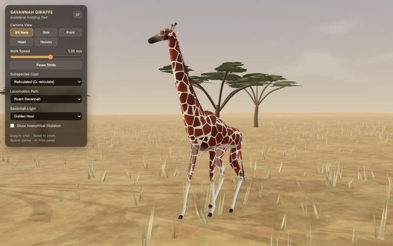
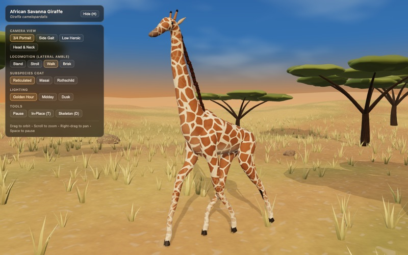

Run the giraffeGemini 4 Hydrogen
Google · OpenRouter
Released November 12, 2026
Looks (AI)★★★★★
Coding time26 min
Speed (provider)83.9 tok/s
Cost (real, API)$1.92
Details
- Model on OpenRouter
- google/gemini-4-hydrogen
- Weights
- Closed model, weights not published
- Released
- November 12, 2026 (date the model was added to OpenRouter)
- Hardware
- Cloud via OpenRouter, served by Google
- Harness
- pi 1.5.0
- Thinking
- Model default (pi and OpenCode sent no thinking setting to OpenRouter, so the model default applied)
no reasoning tokens billed - Coding time
- 26 min, 71 requests
- Tokens
- 7,710,154 (260,294 new input, 7,319,003 cached, 130,857 output)
- OpenRouter cost (real, via API)
- $1.92 (list price per million tokens: $1.50 input, $0.075 cached, $7.50 output)

Run the giraffeGemini 4 Hydrogen
Google · OpenRouter
Released November 12, 2026
Looks (AI)★★★★★
Coding time21 min
Speed (provider)64.7 tok/s
Cost (real, API)$1.85
Details
- Model on OpenRouter
- google/gemini-4-hydrogen
- Weights
- Closed model, weights not published
- Released
- November 12, 2026 (date the model was added to OpenRouter)
- Hardware
- Cloud via OpenRouter, served by Google
- Harness
- OpenCode 2.2.5
- Thinking
- Model default (pi and OpenCode sent no thinking setting to OpenRouter, so the model default applied)
37,779 reasoning tokens billed - Coding time
- 21 min, 57 requests
- Tokens
- 5,422,610 (378,952 new input, 4,960,545 cached, 83,113 output)
- OpenRouter cost (real, via API)
- $1.85 (list price per million tokens: $1.50 input, $0.075 cached, $7.50 output)